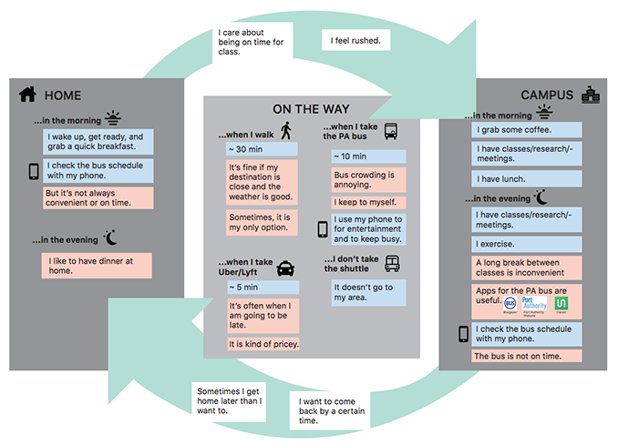

RIDESHARE +
TYPE:USER RESEARCH & EVALUATION
DURATION: 12 WEEKS
ROLES: USER RESEARCHER, INTERVIEWER
METHODS: FLY ON THE WALL, SURVEYS, INTERVIEWING,
AFFINITY MODELING,DAY IN THE LIFE/SEQUENCE MODELS, STORYBOARDING
01 PROBLEM STATEMENT
In 2017, drastic cuts were made to Pittsburgh's Port Authority bus system. Numerous routes were eliminated
causing problems for many faculty and staff at Carnegie Mellon, especially those that live-off campus. For my
User Centered Research class, we used several methods to analyze our key clients: students at Carnegie Mellon
along with other stakeholders. In teams, we also prepared solutions to potentially reducing
the effect of these cuts on students.


02 PROCESS
This semester long project began with interviews conducted on our stakeholders, ranging from students to administraton
to better understand the issue at hand and what the overall consensus is regarding transportation at Carnegie Mellon.
After several interviews, we aggregated the data to build models and affinity diagrams on key problems. From there we
were able to develop several ideas for solutions, storyboard and collect feedback, and come up with our final solution:
a ridesharing contract with Uber where students could get cheaper rides during certain hours of the nights on weekdays.
This project was really interesting because at the time I was working on a student government project to bring UberPool
to campus. This allowed me to gain fresh insight on what was feasible on campus and even within the Pittsburgh city limits.

03 MODELING/AFFINITY DIAGRAMS
Our key clients were graduate students at CMU and other
stakeholders included CMU's escort and shuttle services,
Uber, Lyft, Port Authority, Pittsburgh Transportation, as well as
undergrads and faculty. We interviewed people from each group
and aggregated models of motivations, problems, and uses of the bus.
We came to the conclusion that for most people,
convenience is of utmost importance,especially during
the winter and with late night studying.
04 STORYBOARDING
For storyboarding, we presented three solutions to the cuts on Port Authority:
more cheap on-campus housing, kiosks/heated stations so waiting for the
bus wouldn't be as strenuous, and using some sort of cheaper ridesharing service.
05 FINAL DESIGN
Our final design was a ridesharing services using the resources of Uber,
something like UberPool but specific to students. This would cater to
student's late night needs and would aid in improving security on
campus while providing an extra source of revenue for Uber.